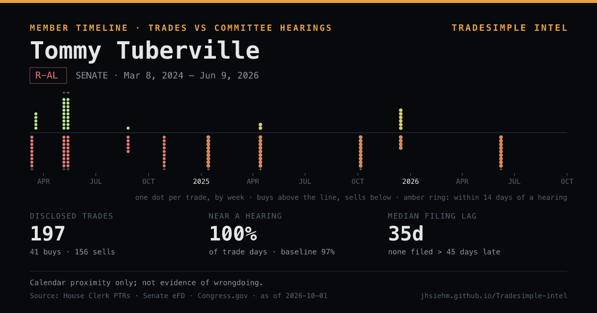

Open Tommy Tuberville's timeline in TradeSimple Intel
Sen. Tommy Tuberville (R-AL): 197 disclosed trades since Mar 8, 2024 · 100% of trade days within 14 days of a hearing on their committees vs 97% of all days · median filing lag 35d. Calendar proximity only.
